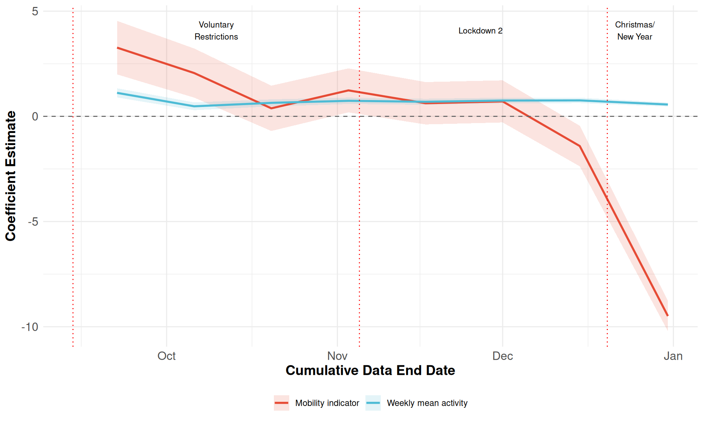
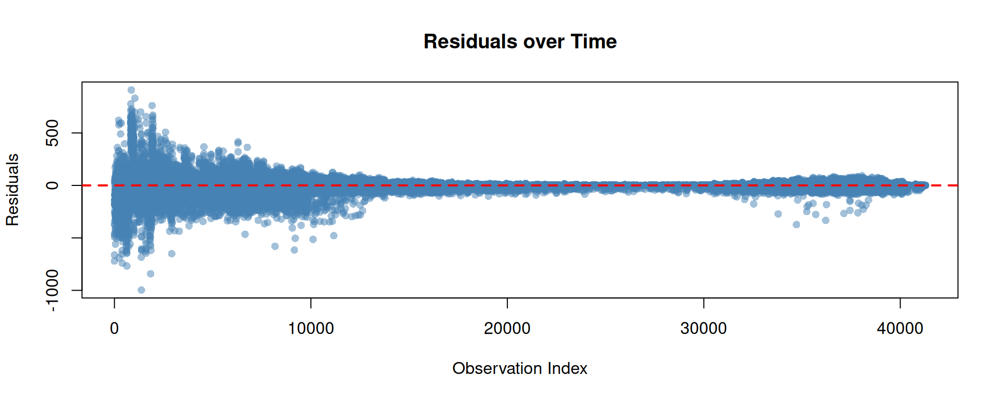
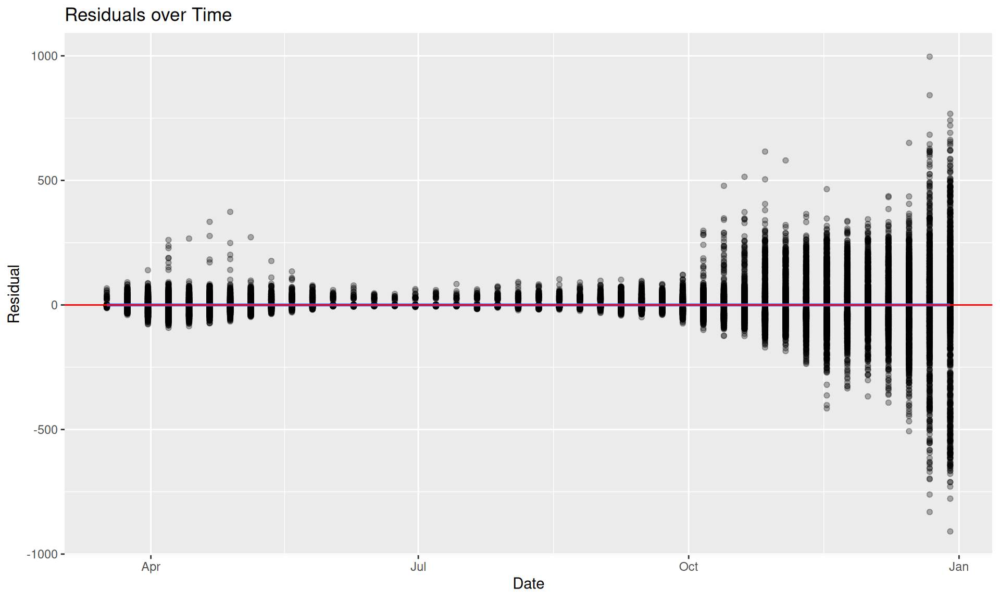
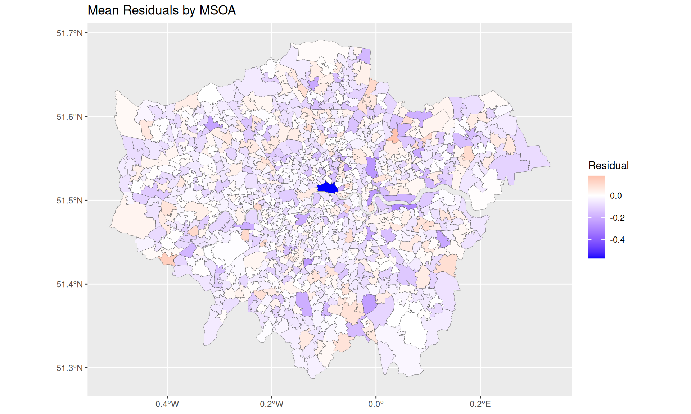
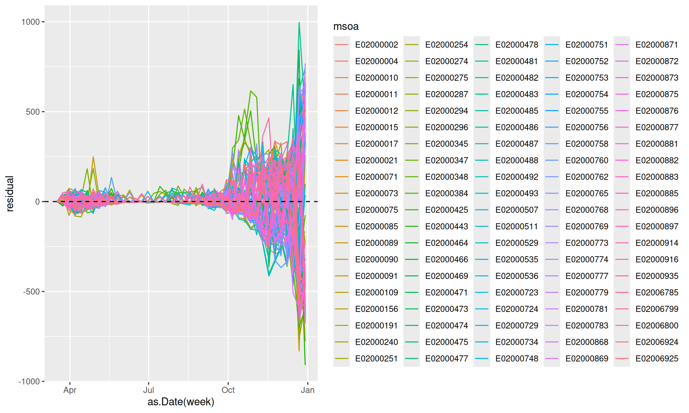
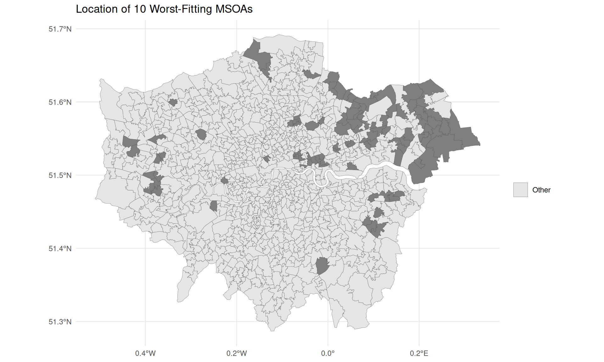
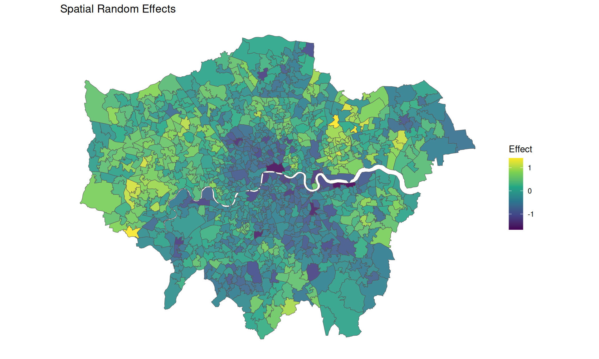

library(INLA)
library(Metrics)
library(ggplot2)
library(lubridate)
library(arrow)
library(dplyr)
library(tidyr)
library(sf)Spatiotemporal Modeling of COVID-19 Cases
Setup
Load Libraries
Source Helper Functions
# Load graph structure
source("02_Modelling/create_graph.R")Reading layer `LAD' from data source
`/home/poshan/Desktop/phd/Metma_paper/code/Revised_code/data/Boundary/LAD.gpkg'
using driver `GPKG'
Simple feature collection with 33 features and 12 fields
Geometry type: MULTIPOLYGON
Dimension: XY
Bounding box: xmin: 503574.2 ymin: 155850.8 xmax: 561956.7 ymax: 200933.6
Projected CRS: OSGB36 / British National Grid# Load helper functions
source("02_Modelling/helper_functions.R")Load data
Model Specification
Model Function
This function runs INLA models and returns comprehensive results including model fit statistics.
# Define precision prior
precision.prior <- list(prec = list(prior = "pc.prec", param = c(0.25, 0.01)))
inlaModels <- function(formula, df = london_df, family = "xpoisson") {
# Fit INLA model
m <- inla(
formula = formula,
family = family,
offset = log(Population / 10^5), # per 100,000 population
data = df,
control.compute = list(waic = TRUE, cpo = TRUE, config = TRUE),
control.fixed = list(
correlation.matrix = TRUE,
prec.intercept = 1,
prec = 1
),
control.predictor = list(link = 1, compute = TRUE),
verbose = TRUE
)
sum <- summary(m)
# Extract fitted values and residuals
result <- cbind(
m$summary.fitted.values,
obs = df$caserate,
week = df$date,
msoa = df$areaCode
)
result$residue <- result$mean - result$obs
# Calculate R-squared
r2 <- R_squared(result$obs, result$mean)
# Calculate error metrics
rmse_val <- rmse(result$obs, result$mean)
mae_val <- mae(result$obs, result$mean)
return(list(
formula = formula,
model = m,
summary = sum,
result = result,
r2 = r2,
rmse = rmse_val,
mae = mae_val
))
}Model fits
Non-spatial model
fns<-caserate ~ within_flow + weekly_mean_activity + f(week, model = "rw2", cyclic = TRUE,
constr = TRUE, hyper = precision.prior) +
MobilityLag
model_ns <- inlaModels(fns, df = df)
cat("Non-spatial - WAIC:", model_ns$model$waic$waic, "\n")Non-spatial - WAIC: 4421905 cat("Non-spatial Model - R²:", round(model_ns$r2, 4), "\n")Non-spatial Model - R²: 0.5945 cat("Non-spatial Model - RMSE:", round(model_ns$rmse, 2), "\n")Non-spatial Model - RMSE: 103.88 Model 0: Baseline Model
Model without activity or mobility indicators.
# Baseline formula
f0 <- caserate ~ 1 + within_flow + weekly_mean_activity +
f(week, model = "rw2", constr = TRUE, hyper = precision.prior) +
f(new_id, model = "bym2", graph = msoa_graph, scale.model = TRUE, hyper = precision.prior) +
f(week1, replicate = lad_id, model = "rw2", constr = TRUE,
scale.model = TRUE, hyper = precision.prior)
# Fit baseline model
model_baseline <- inlaModels(f0, df = df)
cat("Baseline Model - WAIC:", model_baseline$model$waic$waic, "\n")Baseline Model - WAIC: 7477604 cat("Baseline Model - R²:", round(model_baseline$r2, 4), "\n")Baseline Model - R²: 0.7832 cat("Baseline Model - RMSE:", round(model_baseline$rmse, 2), "\n")Baseline Model - RMSE: 75.96 Model 1: Neighbor Activity Model
Model with spatially weighted daily activities from neighboring regions.
Neighbor Activity Model - WAIC: 7442325 Neighbor Activity Model - R²: 0.7834 Neighbor Activity Model - RMSE: 75.91 Model 2: Mobility Activity Model
Model with origin-destination mobility-weighted daily activities.
# Update formula with mobility lag
f2 <-caserate ~ 1 + within_flow + weekly_mean_activity + MobilityLag +
f(week, model = "rw2", constr = TRUE, hyper = precision.prior) +
f(new_id, model = "bym2", graph = msoa_graph, scale.model = TRUE, hyper = precision.prior) +
f(week1, replicate = lad_id, model = "rw2", constr = TRUE,
scale.model = TRUE, hyper = precision.prior)
# Fit mobility activity model
model_od <- inlaModels(f2, df = df)
cat("Mobility Activity Model - WAIC:", model_od$model$waic$waic, "\n")Mobility Activity Model - WAIC: 7499374 cat("Mobility Activity Model - R²:", round(model_od$r2, 4), "\n")Mobility Activity Model - R²: 0.7835 cat("Mobility Activity Model - RMSE:", round(model_od$rmse, 2), "\n")Mobility Activity Model - RMSE: 75.91 Reduced models for sensitivity checks on spatial confounding
Model 4 (model 2 without the spatial random effect)
Neighbor Activity Model - WAIC: 15331179 Neighbor Activity Model - R²: 0.6577 Neighbor Activity Model - RMSE: 95.45 Model 5 (model 3 without the spatial random effect)
f2_1 <-caserate ~ 1 + within_flow + weekly_mean_activity + MobilityLag +
f(week, model = "rw2", constr = TRUE, hyper = precision.prior) +
f(week1, replicate = lad_id, model = "rw2", constr = TRUE,
scale.model = TRUE, hyper = precision.prior)
# Fit mobility activity model
model_od_1 <- inlaModels(f2_1, df = df)
cat("Mobility Activity Model - WAIC:", model_od_1$model$waic$waic, "\n")Mobility Activity Model - WAIC: 15430255 cat("Mobility Activity Model - R²:", round(model_od_1$r2, 4), "\n")Mobility Activity Model - R²: 0.6575 cat("Mobility Activity Model - RMSE:", round(model_od_1$rmse, 2), "\n")Mobility Activity Model - RMSE: 95.47 Model Comparison
Model Evaluation Metrics
# Create comparison table
comparison_df <- data.frame(
Model = c("Non-spatial", "Baseline", "Neighbor Activity", "Mobility Activity"),
WAIC = c(
model_ns$model$waic$waic,
model_baseline$model$waic$waic,
model_neighbors$model$waic$waic,
model_od$model$waic$waic
),
CPO = c(
cpo(model_ns),
cpo(model_baseline),
cpo(model_neighbors),
cpo(model_od)
),
# R_squared = c(
# model_baseline$r2,
# model_neighbors$r2,
# model_od$r2
# ),
RMSE = c(
model_ns$rmse,
model_baseline$rmse,
model_neighbors$rmse,
model_od$rmse
),
MAE = c(
model_ns$mae,
model_baseline$mae,
model_neighbors$mae,
model_od$mae
)
)CPO Diagnostics:
Failures: 0
Zero/negative values: 0
Missing values: 0
Valid CPO values: 0 out of 0 CPO Diagnostics:
Failures: 0
Zero/negative values: 0
Missing values: 0
Valid CPO values: 0 out of 0 CPO Diagnostics:
Failures: 0
Zero/negative values: 0
Missing values: 0
Valid CPO values: 0 out of 0 CPO Diagnostics:
Failures: 0
Zero/negative values: 0
Missing values: 0
Valid CPO values: 0 out of 0 knitr::kable(comparison_df, digits = 2, caption = "Model Performance Comparison")| Model | WAIC | CPO | RMSE | MAE |
|---|---|---|---|---|
| Non-spatial | 4421905 | NA | 103.88 | 44.33 |
| Baseline | 7477604 | NA | 75.96 | 35.45 |
| Neighbor Activity | 7442325 | NA | 75.91 | 35.44 |
| Mobility Activity | 7499374 | NA | 75.91 | 35.46 |
Temporal Dynamics of Mobility Indicator
# Function to run models up to different end dates
run_models_by_date <- function(df, end_dates, formula) {
results <- data.frame()
for (i in seq_along(end_dates)) {
end_date <- end_dates[i]
cat("Fitting model up to:", as.Date(end_date), "\n")
# Subset data
df_subset <- df |> filter(date <= as.Date(end_date))
# Fit model
model <- inlaModels(formula, df = df_subset)
# Extract fixed effects
fixed_effects <- model$model$summary.fixed
# Store results
temp_df <- data.frame(
end_date = as.Date(end_date),
variable = rownames(fixed_effects),
mean = fixed_effects$mean,
lower = fixed_effects$`0.025quant`,
upper = fixed_effects$`0.975quant`
)
results <- rbind(results, temp_df)
}
return(results)
}# Usage:
end_dates <- seq(as.Date("2020-09-14"), as.Date("2021-01-08"), by = "2 weeks")
end_dates <- c("2020-09-22", "2020-10-06", "2020-10-20", "2020-11-03", "2020-11-17", "2020-12-01", "2020-12-15", "2020-12-31")
# end_dates <- c("2020-08-01", "2020-12-31")
f_explicit <- f2 <-caserate ~ 1 + within_flow + weekly_mean_activity + MobilityLag +
f(week, model = "rw2", constr = TRUE, hyper = precision.prior) +
f(new_id, model = "bym2", graph = msoa_graph, scale.model = TRUE, hyper = precision.prior) +
f(week1, replicate = lad_id, model = "rw2", constr = TRUE,
scale.model = TRUE, hyper = precision.prior)
results <- run_models_by_date(df, end_dates, f_explicit)##same for the neighborhood model
f_explicit <- f2 <-caserate ~ 1 + within_flow + weekly_mean_activity + spatial_lag +
f(week, model = "rw2", constr = TRUE, hyper = precision.prior) +
f(new_id, model = "bym2", graph = msoa_graph, scale.model = TRUE, hyper = precision.prior) +
f(week1, replicate = lad_id, model = "rw2", constr = TRUE,
scale.model = TRUE, hyper = precision.prior)
results_neighborhood <- run_models_by_date(df, end_dates, f_explicit)Fitting model up to: 18527
Fitting model up to: 18541
Fitting model up to: 18555
Fitting model up to: 18569
Fitting model up to: 18583
Fitting model up to: 18597
Fitting model up to: 18611
Fitting model up to: 18627 # Define nice colors and labels
variable_labels <- c(
"MobilityLag" = "Mobility indicator",
"within_flow" = "Within-region flow",
"weekly_mean_activity" = "Weekly mean activity"
)
variable_colors <- c(
"MobilityLag" = "#E64B35", # Red/coral
"within_flow" = "#4DBBD5", # Cyan/blue
"weekly_mean_activity" = "#4DBBD5" # Green/teal
)
# Create the plot
results |>
filter(variable %in% c("MobilityLag", "weekly_mean_activity")) |>
ggplot(aes(x = end_date, y = mean, color = variable, fill = variable)) +
geom_ribbon(aes(ymin = lower, ymax = upper), alpha = 0.15, color = NA) +
geom_line(size = 1) +
geom_hline(yintercept = 0, linetype = "dashed", color = "gray40", size = 0.5) +
# Add vertical lines for phases
geom_vline(xintercept = as.Date(c("2020-09-14", "2020-11-05", "2020-12-20")),
linetype = "dotted", color = "red", size = 0.5) +
# Add phase labels
annotate("text", x = as.Date("2020-10-10"), y = max(results$upper[results$variable == "MobilityLag"]) * 0.9,
label = "Voluntary\nRestrictions", hjust = 0.5, size = 3) +
annotate("text", x = as.Date("2020-11-27"), y = max(results$upper[results$variable == "MobilityLag"]) * 0.9,
label = "Lockdown 2", hjust = 0.5, size = 3) +
annotate("text", x = as.Date("2020-12-25"), y = max(results$upper[results$variable == "MobilityLag"]) * 0.9,
label = "Christmas/\nNew Year", hjust = 0.5, size = 3) +
scale_color_manual(values = variable_colors, labels = variable_labels) +
scale_fill_manual(values = variable_colors, labels = variable_labels) +
labs(x = "Cumulative Data End Date", y = "Coefficient Estimate", color = NULL, fill = NULL) +
theme_minimal() +
theme(
legend.position = "bottom",
axis.text = element_text(size = 12),
axis.title = element_text(size = 14, face = "bold")
)
##ggsave("plots/temporal_coefficient_evolution.png", width = 10, height = 4, dpi = 300)plot the resulting varying coefficinet
results_neighborhood |>
filter(variable %in% c("spatial_lag", "within_flow", "weekly_mean_activity")) |>
ggplot(aes(x = end_date, y = mean, color = variable)) +
geom_line() +
geom_ribbon(aes(ymin = lower, ymax = upper, fill = variable), alpha = 0.2) +
geom_hline(yintercept = 0, linetype = "dashed") +
labs(x = "End Date", y = "Coefficient", title = "Changing coefficient over time")
Model Diagnostics for Mobility Activity Model (Model 3)
Using the Mobility Activity Model for diagnostics.
Residual Summary
cat("Residual Summary:\n")Residual Summary:summary(model_od$result$residue) Min. 1st Qu. Median Mean 3rd Qu. Max.
-996.62086 -8.89611 1.18532 0.02639 13.02222 909.10746 Residual Plot
plot(model_od$result$residue,
main = "Residuals over Time",
ylab = "Residuals",
xlab = "Observation Index",
pch = 16,
col = alpha("steelblue", 0.5))
abline(h = 0, col = "red", lty = 2, lwd = 2)
Residuals by time
model_od$result$residual <- model_od$result$obs - model_od$result$mean
library(ggplot2)
ggplot(model_od$result, aes(x = as.Date(week), y = residual)) +
geom_point(alpha = 0.3) +
geom_smooth() +
geom_hline(yintercept = 0, color = "red") +
labs(x = "Date", y = "Residual", title = "Residuals over Time")
Residuals by space
spatial_residuals <- model_od$result |>
group_by(msoa) |>
summarise(mean_resid = mean(residual))
msoa |>
left_join(spatial_residuals, by = c("MSOA11CD" = "msoa")) |>
ggplot() +
geom_sf(aes(fill = mean_resid), linewidth = 0.1) +
scale_fill_gradient2(low = "blue", mid = "white", high = "red") +
labs(title = "Mean Residuals by MSOA", fill = "Residual")
Residuals by MSOAs
sum(abs(model_od$result$residual) > 100) # Count large residuals[1] 3653# Top 5 worst MSOAs by mean absolute residual
worst_msoas <- model_od$result |>
group_by(msoa) |>
summarise(mae = mean(abs(residual))) |>
slice_max(mae, n = 100) |>
pull(msoa)
model_od$result |>
filter(msoa %in% worst_msoas) |>
ggplot(aes(x = as.Date(week), y = residual, color = msoa)) +
geom_line() +
geom_hline(yintercept = 0, linetype = "dashed") 
# Create map
msoa %>%
mutate(is_worst = ifelse(MSOA11CD %in% worst_msoas, "Top 20 Worst", "Other")) %>%
ggplot() +
geom_sf(aes(fill = is_worst), linewidth = 0.1) +
scale_fill_manual(values = c("Top 10 Worst" = "red", "Other" = "grey90")) +
labs(title = "Location of 10 Worst-Fitting MSOAs", fill = "") +
theme_minimal()
Spatial Random Effects
plot_spatial <- plot_spatial_random_effect(model_od$model, msoa, "new_id")
print(plot_spatial)
Temporal Random Effects
# plot_temporal <- plot_temporal_random_effect(model_od$model, "week")
# plot(y=0, add=TRUE)
# print(plot_temporal)Observed vs Fitted Values
Temporal series
Four selected high and low case rate areas.
library(gridExtra)
library(grid)
#### Combined 2x2 grid plot ----------------------
comparision_plot_temporal_single <- function(areaCode, model){
###plot the results for single area (no saving)
model$result$week <- as.Date(model$result$week)
plot_data <- filter(model$result, msoa == areaCode)
plot <- ggplot(plot_data, aes(x=week, y=mean, group=1))+
geom_line(col = "blue", size = 0.8)+
geom_line(aes(x=week, y= obs), col="red", size = 0.8)+
geom_ribbon(aes(ymin=`0.025quant`, ymax=`0.975quant`), alpha=0.3, fill="blue") +
labs(x = "Date", y = "Weekly incidence/100,000") +
ggtitle(areaCode) +
theme_minimal()+
theme(legend.position = "none",
axis.text = element_text(size = 10),
axis.title = element_text(size = 11, face = "bold"),
plot.title = element_text(size = 11, face = "bold", hjust=0.5),
panel.grid.minor = element_line(color = "grey80", size = 0.5))+
scale_x_date(date_breaks = "3 month",
date_labels = "%b %Y",
date_minor_breaks = "1 month") +
geom_vline(xintercept = as.Date(c("2020-03-23", "2020-05-10", "2020-09-14", "2020-11-05")),
linetype = "dotted", color = "black", size = 0.5)
return(plot)
}
# Select 4 areas
selected_areas <- c("E02000173", "E02000295", "E02000491", "E02000879")
# Generate individual plots
p1 <- comparision_plot_temporal_single(selected_areas[1], model_od)
p2 <- comparision_plot_temporal_single(selected_areas[2], model_od)
p3 <- comparision_plot_temporal_single(selected_areas[3], model_od)
p4 <- comparision_plot_temporal_single(selected_areas[4], model_od)
# Combine into 2x2 grid with caption
combined_plot <- arrangeGrob(p1, p2, p3, p4, ncol=2)
# Save
# #ggsave("plots/temporal_observed_fitted_combined.png",
# combined_plot,
# width=12,
# height=10,
# dpi=300)Session Information
sessionInfo()R version 4.5.1 (2025-06-13)
Platform: x86_64-pc-linux-gnu
Running under: Ubuntu 24.04.3 LTS
Matrix products: default
BLAS: /usr/lib/x86_64-linux-gnu/blas/libblas.so.3.12.0
LAPACK: /usr/lib/x86_64-linux-gnu/lapack/liblapack.so.3.12.0 LAPACK version 3.12.0
locale:
[1] LC_CTYPE=en_US.UTF-8 LC_NUMERIC=C
[3] LC_TIME=en_US.UTF-8 LC_COLLATE=en_US.UTF-8
[5] LC_MONETARY=en_US.UTF-8 LC_MESSAGES=en_US.UTF-8
[7] LC_PAPER=en_US.UTF-8 LC_NAME=C
[9] LC_ADDRESS=C LC_TELEPHONE=C
[11] LC_MEASUREMENT=en_US.UTF-8 LC_IDENTIFICATION=C
time zone: Europe/Berlin
tzcode source: system (glibc)
attached base packages:
[1] grid stats graphics grDevices utils datasets methods
[8] base
other attached packages:
[1] gridExtra_2.3 patchwork_1.3.2 scales_1.4.0 viridis_0.6.5
[5] viridisLite_0.4.2 spdep_1.4-1 spData_2.3.4 sf_1.0-21
[9] tidyr_1.3.1 dplyr_1.1.4 arrow_21.0.0.1 lubridate_1.9.4
[13] ggplot2_4.0.0 Metrics_0.1.4 INLA_25.06.07 Matrix_1.7-4
loaded via a namespace (and not attached):
[1] gtable_0.3.6 xfun_0.53 htmlwidgets_1.6.4 lattice_0.22-5
[5] vctrs_0.6.5 tools_4.5.1 generics_0.1.4 parallel_4.5.1
[9] tibble_3.3.0 proxy_0.4-27 pkgconfig_2.0.3 KernSmooth_2.23-26
[13] RColorBrewer_1.1-3 S7_0.2.0 assertthat_0.2.1 lifecycle_1.0.4
[17] compiler_4.5.1 farver_2.1.2 deldir_2.0-4 fmesher_0.5.0
[21] MatrixModels_0.5-4 htmltools_0.5.8.1 class_7.3-23 yaml_2.3.10
[25] pillar_1.11.1 classInt_0.4-11 wk_0.9.4 boot_1.3-31
[29] nlme_3.1-168 tidyselect_1.2.1 digest_0.6.37 purrr_1.1.0
[33] labeling_0.4.3 splines_4.5.1 fastmap_1.2.0 cli_3.6.5
[37] magrittr_2.0.4 e1071_1.7-16 withr_3.0.2 sp_2.2-0
[41] bit64_4.6.0-1 timechange_0.3.0 rmarkdown_2.30 bit_4.6.0
[45] evaluate_1.0.5 knitr_1.50 mgcv_1.9-1 s2_1.1.9
[49] rlang_1.1.6 Rcpp_1.1.0 glue_1.8.0 DBI_1.2.3
[53] jsonlite_2.0.0 R6_2.6.1 units_1.0-0